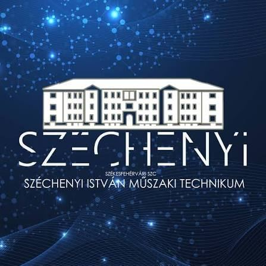
← → vagy Szóköz: lapozás · F: teljes képernyő · N: jegyzet · T: időzítő
Itt az ötletből kézzelfogható tárgy lesz. Képernyőn megtervezzük, aztán kinyomtatjuk, kivágjuk vagy beprogramozzuk.
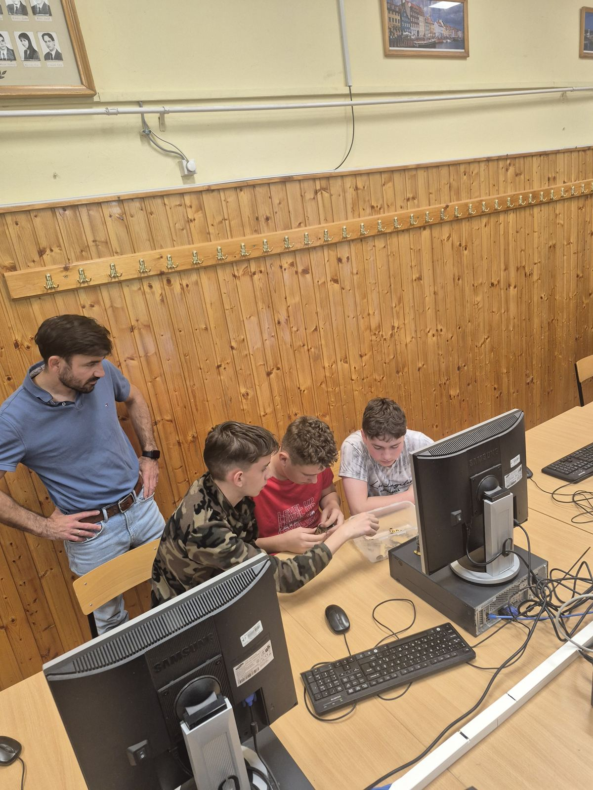
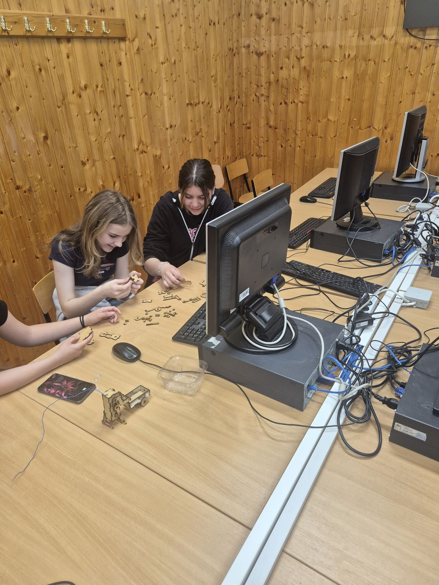
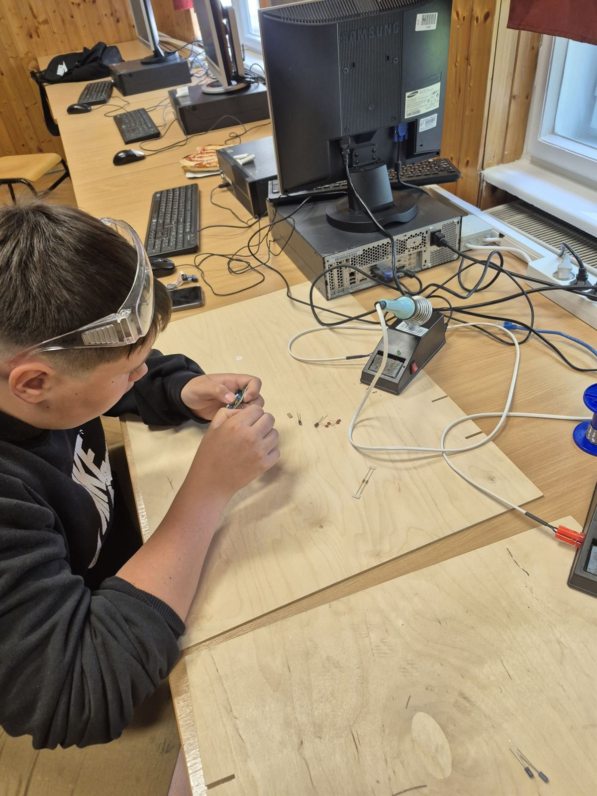
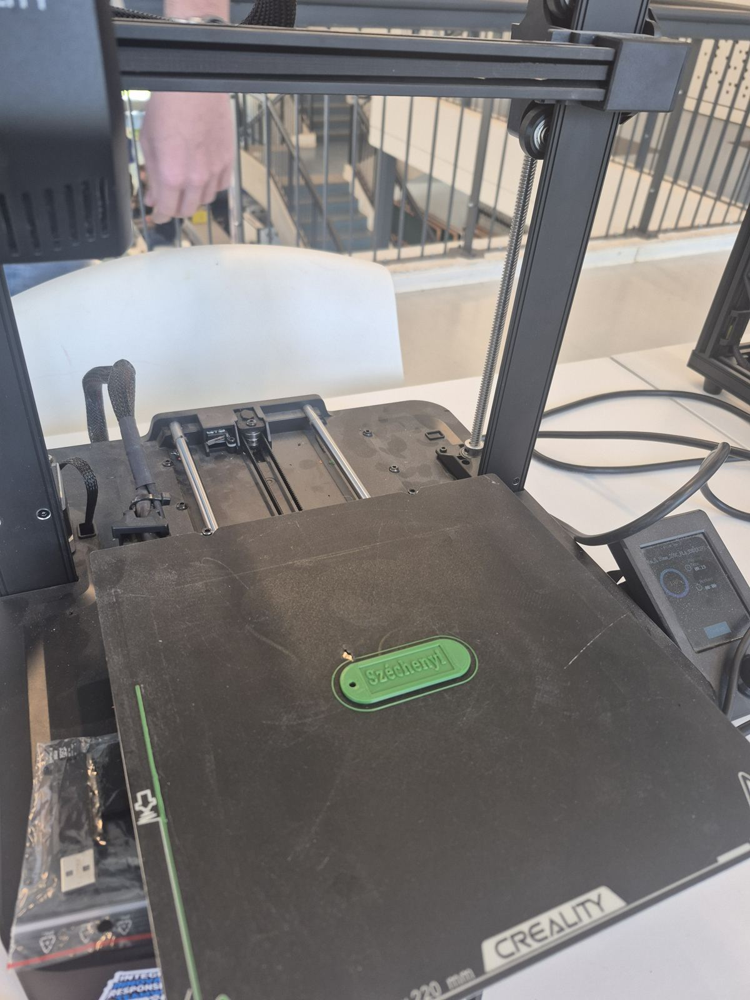
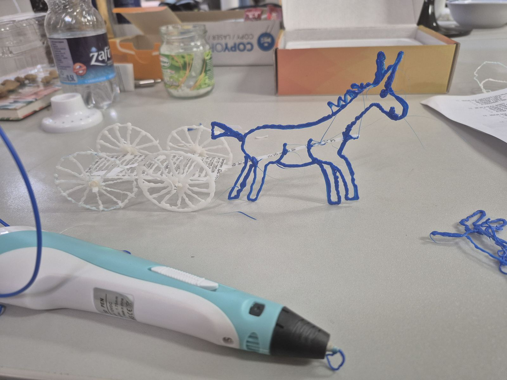
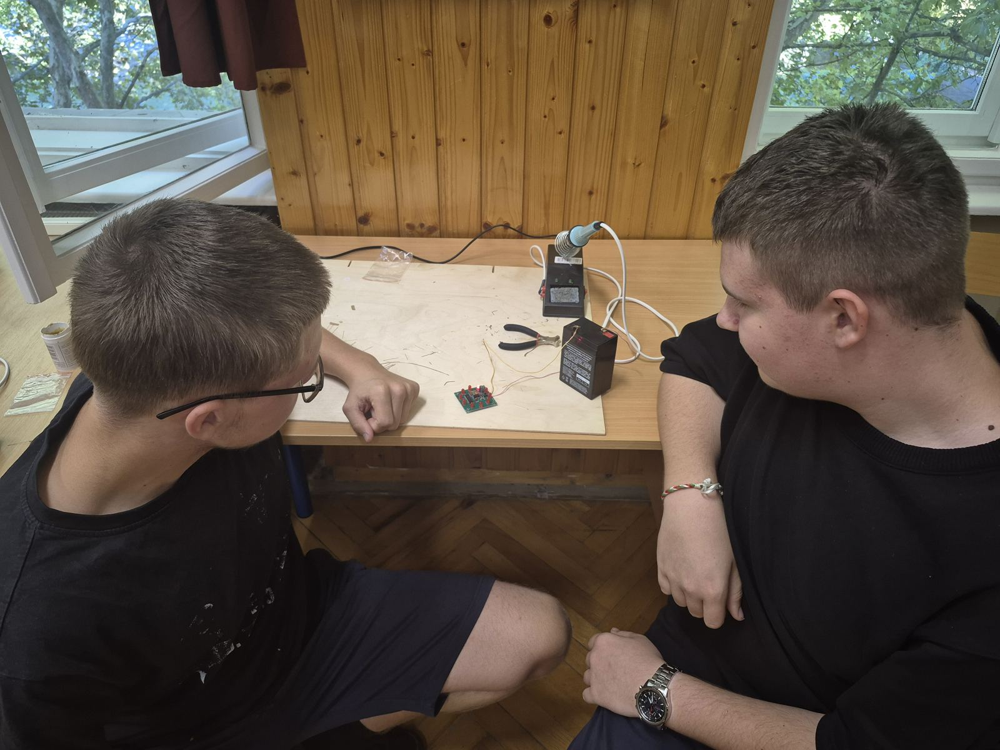
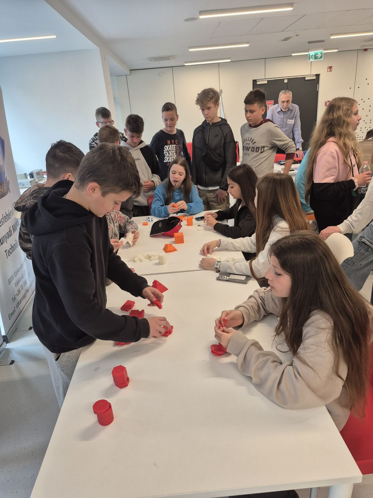
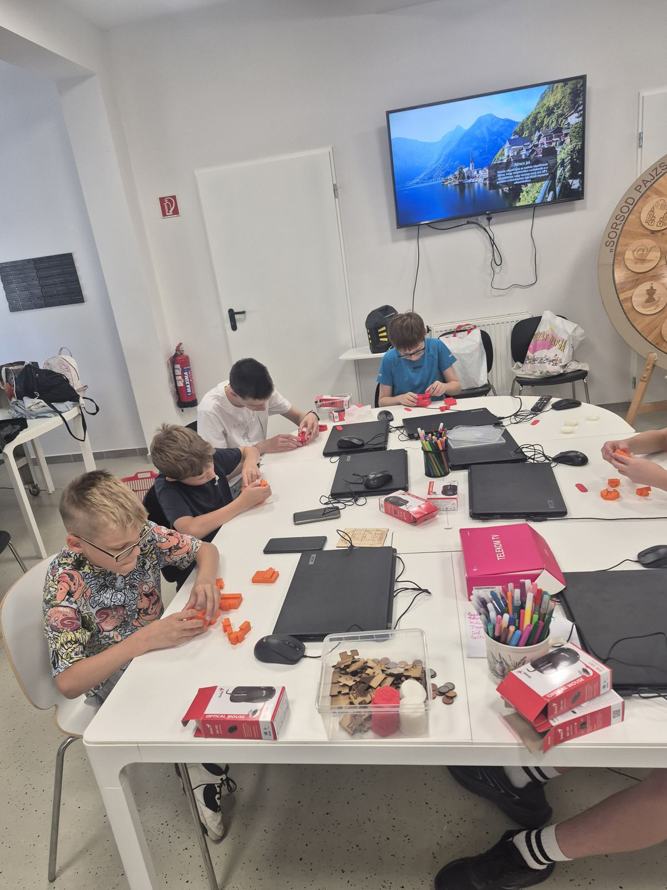
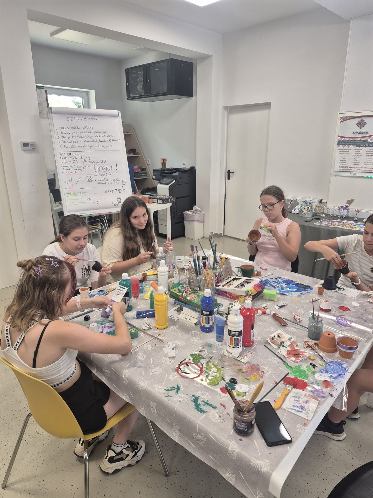
A Gróf Széchenyi-díj bronz, ezüst és arany fokozatának mellszobrait mi terveztük és nyomtattuk 3D-ben.
Kreitzer Ádám és Preseka Zoltán városi környezetre tervezett, saját építésű önvezető mopedautóval. Iskolánk bekerült az ország 20 legsikeresebb innovatív középiskolája közé.
Az innovációs versenyeken a diákok saját ötletet visznek végig: terv, prototípus, bemutatás a zsűri előtt.
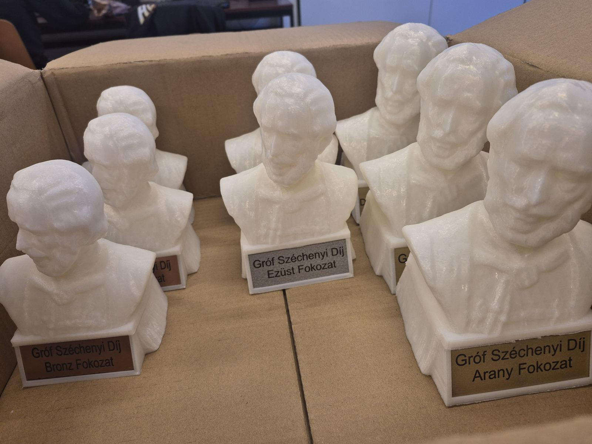
Kétéves partnerség az isztambuli Gülizar Zeki Obdan Anadolu Lisesivel. Téma: robotika, okos mezőgazdaság, zöldebb jövő.
Projektszám: 2023-1-HU01-KA210-VET-000156243
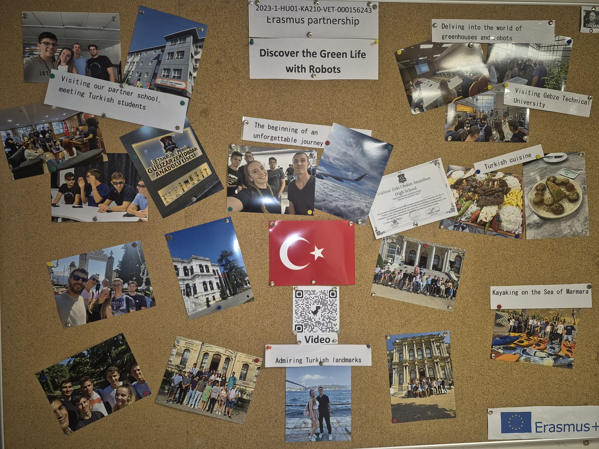
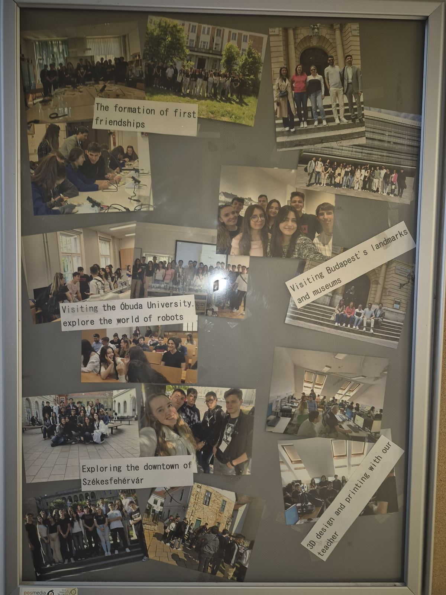
A Budapesti Gépészeti SZC Mechatronikai Technikumában. Kétfős csapatok 3D-ben tervezik és nyomtatják ki a hidat, a döntőn pedig addig terhelik, amíg el nem törik.
Junior Engineers Camp: 24 órás ötlet- és prototípusfejlesztő verseny középiskolásoknak és egyetemistáknak.
Szervezők: Óbudai Egyetem Alba Regia Kar, Harman Becker Kft. és Székesfehérvár városa. Helyszín: Sóstói Stadion.
Autó, otthon, iskola, kórház vagy egész város: a csapat választja ki, milyen „okos teret” álmodik meg, és egy rövidfilmmel jelentkezett.
A díjak között JBL hangtechnika szerepel. A szakkörben tanult Arduino- és 3D-tudás itt közvetlenül prototípussá válik.
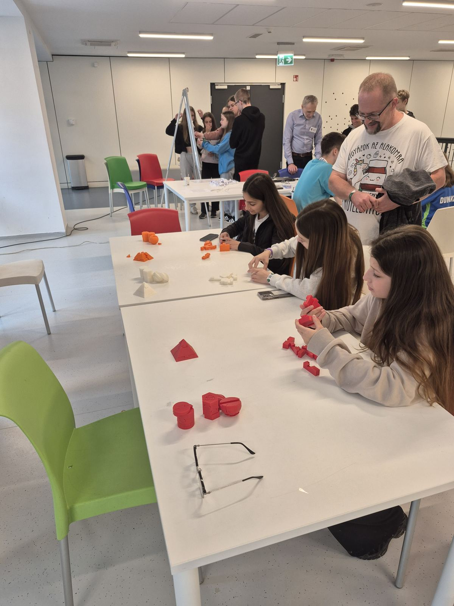
Lukács KárolyKeressetek a nyílt nap után is, szívesen megmutatom a műhelyt!